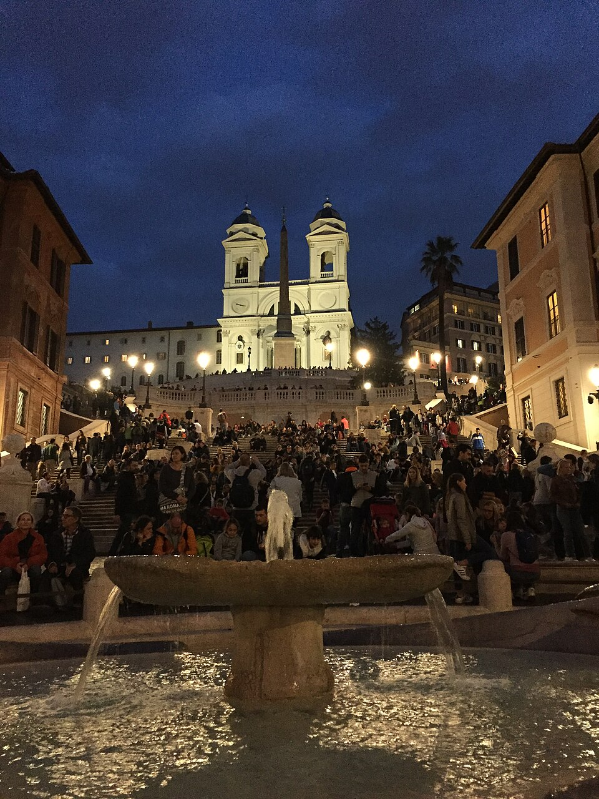

info e posizione
Piazza di Spagna, ai piedi della scalinata di Trinità dei Monti che la collega all'omonima piazza, è una delle più famose di Roma. Deve il suo nome al palazzo di Spagna, sede dell'ambasciata dello Stato iberico presso la Santa Sede dal 1622. Vista dall'alto appare come la forma ad "ali di farfalla", formata da due triangoli con il vertice in comune. Al centro della piazza vi è la nota fontana della Barcaccia, che risale al primo periodo barocco, realizzata da Pietro Bernini e da suo figlio, il più celebre Gian Lorenzo.
Storia e descrizione

La piazza di Spagna si è venuta formando successivamente alla realizzazione del Tridente e dell'urbanizzazione dell'asse di via del Babuino - Via Due Macelli, già via Paolina (in onore di papa Paolo III Farnese), per assumere il suo aspetto pressoché definitivo nella piena età barocca. Nota fino al XVII secolo come "platea Trinitatis", è rimasta circoscritta all'area sovrastante, in cui si trova la chiesa di Trinità dei Monti e l'obelisco Sallustiano.
La scalinata realizzata nel primo quarto del XVIII secolo andava a completare e risolvere il necessario nodo del raccordo pedonale di importanti tracciati viari, in particolare la via Paolina, la via Trinitatis, la via Sistina e la via Gregoriana che convergevano nell'area su livelli diversi.